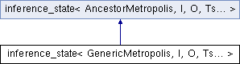

inference_state< GenericMetropolis, I, O, Ts... > Struct Template Reference
Inheritance diagram for inference_state< GenericMetropolis, I, O, Ts... >:

Public Attributes | |
| pp_t< I, O, Ts... > | f |
| endog_proposal_t< Ts... > | proposal |
| endog_proposal_t< Ts... > | replayed_proposal |
 Public Attributes inherited from inference_state< AncestorMetropolis, I, O, Ts... > Public Attributes inherited from inference_state< AncestorMetropolis, I, O, Ts... > | |
| record_t< DTypes< Ts... > > | r |
| std::minstd_rand | rng |
| Uniform | u |
Additional Inherited Members | |
| Public Member Functions inherited from inference_state< AncestorMetropolis, I, O, Ts... > | |
| inference_state (unsigned seed=2022) | |
| double | log_u () |
| void | seed (unsigned seed) |
The documentation for this struct was generated from the following file:
- lib/inference/metropolis/base.hpp